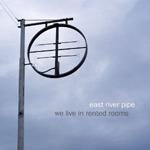
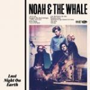

Music Reviews
-

Foo Fighters Wasting Light
Back in action with a familiar cast of players, the long-standing rock troupe returns with their most consistent full-length in years.
Juan Edgardo Rodríguez actually owns all of their records... -
Shugo Tokumaru Port Entropy
The latest release from the Japanese multi-instrumentalist is rich, varied, and at times majestic.
Preston Bernstein reviews... -
Tim Hecker Ravedeath, 1972
Tim Hecker merges electronic elegance with sonic destruction on his latest full length.
Marc Higgins is impressed... -

East River Pipe We Live In Rented Rooms
More blank resignation from the margins of society.
Sam Redlark reviews... -

Noah And The Whale Last Night On Earth
In merging their folky leanings with an electronic sound, Noah And The Whale have become just another forgettable crossover act.
Joel Stanier reviews... -

Bill Callahan Apocalypse
Callahan's third full length without the Smog moniker reveals another facet of his life, one that balances both his primitive self and his homeland.
Juan Edgardo Rodríguez blows with his rifle... -
Chris Brown F.A.M.E.
Ain't life grand? We live in a world where a known violent chauvinist can still get to the top of the US album charts!
Joe Rivers apparently isn't allowed to give albums a minus score... -
Britney Spears Femme Fatale
Britney's seventh album sees the American Pop Princess clutching some very European grooves.
-
The Kills Blood Pressures
With their newest record The Kills have trumped all the questions raised by their last, and they've gone about it with a darker, dirtier, bluesier and better set than a lot of people will want you to admit.
Joe Iliff is looking forward to buying this for himself... -
Wiz Khalifa Rolling Papers
A pop-rap record with a little more depth than the average money grab.
Charlie Jebb is ballin' out on every level...